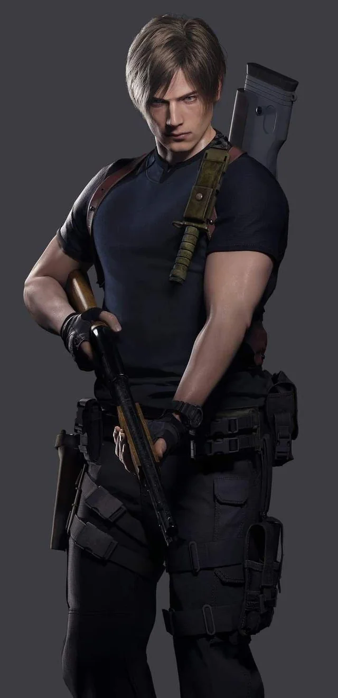
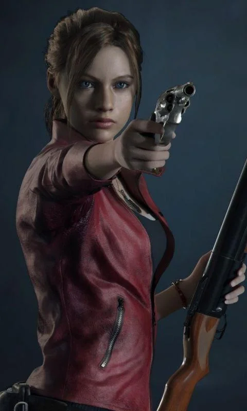
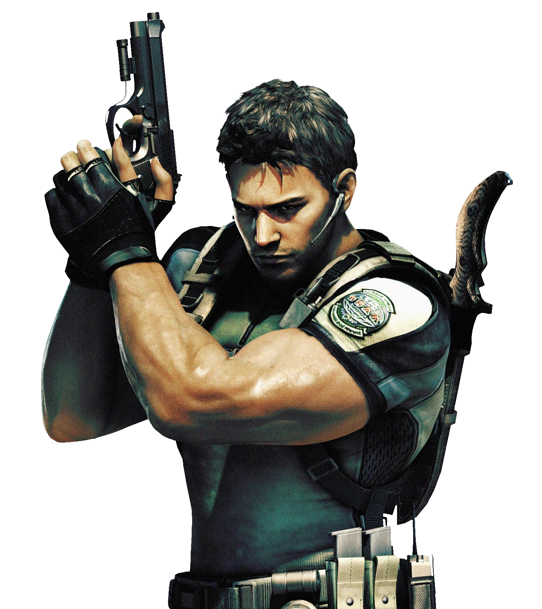
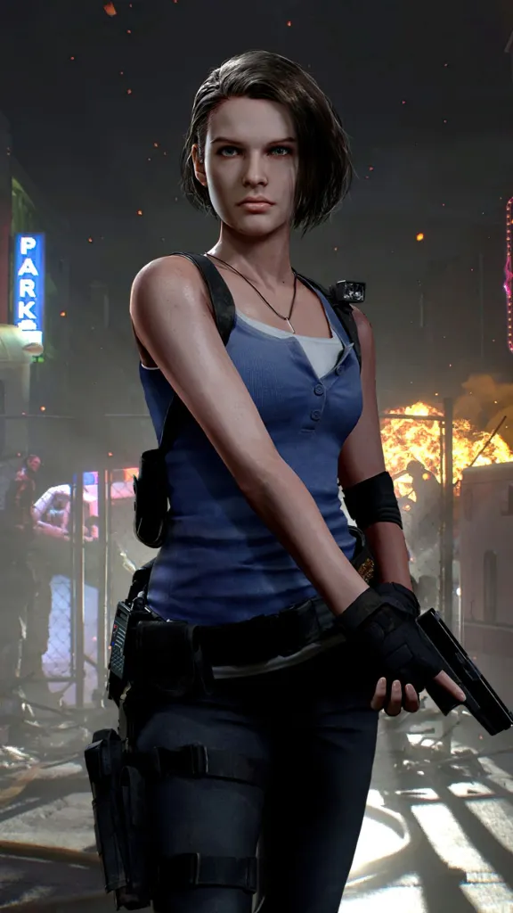
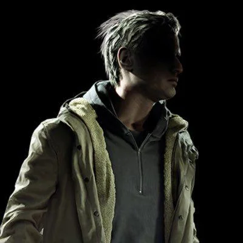

Resident Evil is a game series made by Capcom. The first game was released in 1996 on the playstation and was monumental in defining the survival horror genre. After the first games popularity the series was continued with the release of more games. The general story of Resident evil focuses on outbreaks caused by the production and release of Biological weapons such as viruses and parasites. The corporation behind the manufacturing of these bio-weapons is the Umbrella corporation with inhumane secret experiments created by Oswell E. Spencer. Throughout the game players must fight through zombies and tyrants to survive while also managing their resources and inventory space. The games mix horror, action, exploration, and storytelling all into their games.




